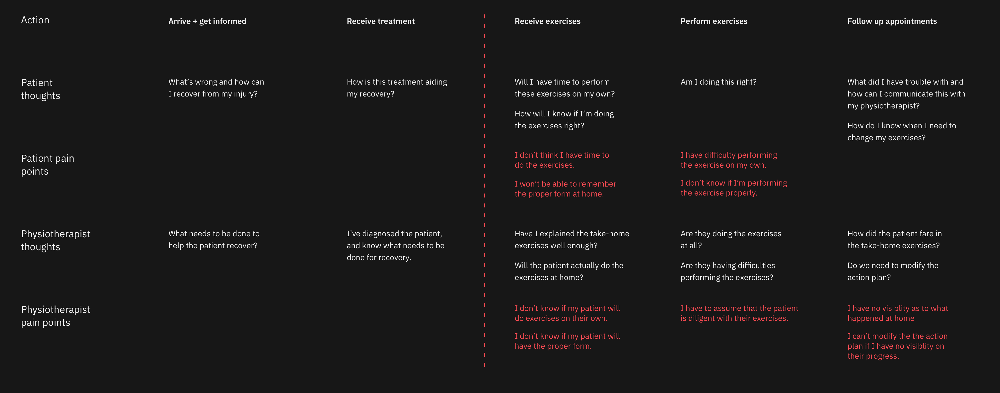

Ibm Watson for Physiotherapy is a digital solution for both physiotherapists and their patients, leveraging Watson real-time visual recognition to analyze patient exercises and recommend best practices and form corrections. This project was completed for a 48 hour IBM North America Intern Hackathon, and placed 2nd within Canada with a team of 7. For this project, I led the interface and experience design and prototyping for the application.
Through research gathered from physiotherapists and anecdotal patient experiences, we found that both patients and physiotherapists alike experience pain points during the rehabilitation process. Key pain points for both these users revolve around the take-home exercises that are given to further patient rehabilitation in between physiotherapy sessions. Patients often have no insight into how accurate they are performing their exercises. They are unsure of what to do if they experience pain or difficulty, in addition to the perception that they have no time to complete these exercises.
Lack of Practitioner VisibilityFor the physiotherapist, they have no visibility into the progress of each of their patient exercises, including uncertainty whether these exercises are actually being performed or not. In each subsequent appointment, the physiotherapist can only trust that the patient is able to properly communicate their difficulty or pain levels in completing their exercises. Without this information, practitioners are required to make a less informed decision on the recovery of their patient.
 Leveraging Watson AIWatson for Physiotherapy is able to use real time visual tracking provided by IBM Cloud to help patients accurately correct their exercise form, as well as integrate this information into a web app to provide insight on each patient’s progress for the physiotherapist.
Watson for Physiotherapy is able to:
IBM is one of the pioneers of the AI health-tech market, however, Watson Health has struggled to gain traction in commercial applications. While large investments have been made into the hospital and large enterprise portion of healthcare, less attention is given to small-medium business (SMB) healthcare providers, which include the outpatient care market, incorporating medical imaging, physiotherapy, etc.

Reflection
Using a modified agile method during this short timeframe is a strategy that our team decided on to improve the shortcomings of our team, which consisted of 4 designers and 3 developers. By passing off small iterations of design to development, we were able to utilize our developer members while designs were still being created. Passing off wireframes and concepts allowed for our developers to start building the skeleton of the app, as well as begin early technological research instead of waiting for completion of designs, which would have reduced their development time drastically.
With more time, we would have liked to place more emphasis into user research and the machine learning process. With a short timeframe and limited space, we didn't have access to many participants for research. More user interviews with both patients and practitioners would be beneficial in validating our assumptions regarding the as-is experience. We also did not have enough time to fully consider the machine learning process regarding ease of use and feasibility. For this project, we needed to assume that the body type of the practitioner and their patients were non-factors for the recognition process.
This hackathon experience was a fun and rewarding 48 hours, developing our knowledge of the Carbon Design System from IBM, and challenging us to have a well thought out (enough) design cycle in such a short timeframe. It was important to us to not skimp on the design process even in a time crunch, and I feel that we were able to complete important aspects of ideation, journey mapping and iterating adequately.